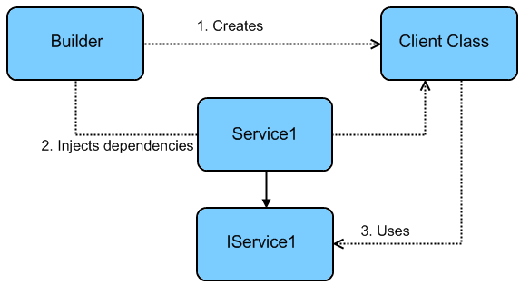

Subject<String> subject = PublishSubject.create(); (1)
// ^^
List<String> list = new ArrayList<>(); (2)
// ^^
Arrays.asList("a", "b", "c"); (3)
// ^^Next level type inference
from sugar to magic
My name is…
Salomon BRYS
Kotliner for 3 years
Author & maintainer of Kodein
I work at…
Type inference
The compiler’s ability to look at each method invocation and corresponding declaration to determine the type argument (or arguments) that make the invocation applicable.
— Java documentation
Type inference
No explicit type…
…but no ambiguity.
= type safe!
Java has no type inference…
Wrong!
Java has SOME type inference!
Inference from context
Inference from context (Java 7)
Inference from arguments
Kotlin type inference engine
Demo time!
Type inference is a sugar tool
All it does is preventing cumbersome explicit typing.
Wrong!
Because reified types.
What are reified types?
They can only exist within inline methods.
What are inline methods?
Methods that will be forcibly inlined at the call site.
inline fun square(a: Int) = a * a
println(square(42)) (1)
println(42 * 42) (2)(1) & (2) are strictly equivalent.
Inline functions with lambdas
It enables
Non local returns.
List / Iterable / Sequence manipulation.
Loads of cool stuff!
What are reified types?
They can only exist within inline methods.
They allow to take action on a generic type…
…provided that this type is known at compile time.
Reified types
Demo time!
Reified infered types
The type argument can be infered!
inline fun <reified T> getInstance(): T = ioc(T::class.java)
// ┌────────────────────────────────┘
val network: Network = getInstance()…is a Dependency Injection (IoC) container
…makes heavy use of reified infered types
…is developped and maintains by yours, truly
…has just been released in version 4
Dependency Injection
Don’t call us, we’ll call you!

Demo time!
By the way…
Kodein is…
…compatible with Android
…compatible with Javascript
…widely used
…a better choice than Dagger 2 :)
…but that’s not the point ;)
Conclusion
Type inference allows conciseness while keeping type safety.
Reified types allow to pass a type as argument.
Reified type inference allows to infer type arguments.